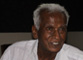

80 Portraits d'Entrepreneurs pour un monde durable
Partant de l'identification
de plus de 530 initiatives d'innovations
sociales et environnementales,
plus de 110 entretiens ont été
menés pour ne retenir que 80 portraits d'entrepreneurs
qui
participent à la construction d'un monde durable.
Peter
Malaise, Ecover, Krapoto Basta, Terra Preserva
Pionnier des produits d'entretien biologiques, Peter Malaise
nous explique comment Ecover tente de faire évoluer
les pratiques de consommation et de production des détergents.
Jan
Peter Bergkvist, Scandic Hotels, l'écolo hôtelier
La première chaîne hôtelière de
Scandinavie est aussi à la pointe de l'innovation environnementale.
Il nous explique à quoi ressemble la chambre écologique
à 97% recyclable.
et bien d'autres dans le domaine des énergies renouvelables,
de l'agriculture raisonnée, de la chimie responsable,
de l'hôtelerie ou du commerce équitable...
11/10/03
Inde

Dr.
G. Venkataswamy, le Chirurgien
Visionnaire...
Fondateur de l'Aravind Eye Hospital et d'Aurolab, il nous
explique comment son modèle permet à des centaines
de milliers d'Indiens de bénéficier de soins
gratuits. Son initiative et sa vie nous ont laissés
admiratifs...
08/11/03
Népal
Sulo
Shah, Le développement, tout un business !!
Fondatrice de Formation Carpets, une PME de textile aux pratiques
sociales innovantes. Histoire d'une militante engagée
qui s'est mue en chef d'entreprise modèle avec succès.
12/11/03
Bangladesh
Muhammad
Yunus, "Vers un Monde sans Pauvreté..."
Créateur dans les années 70 du concept de micro-crédit
et fondateur de la Grameen Bank, il nous explique en quoi
le succès mondial de son modèle le pousse à
croire que les solutions aux problèmes sociaux et environnementaux
du 21ème siècle viendront d'une nouvelle race
d'entrepreneurs...
06/01/04
Chine
Allen
Chan, "Ma mission : prouver que les alternatives existent".
Fondateur de Sino Forest, la seule entreprise Chinoise à
exploiter des "fermes arboricoles" de manière
durable et à grande échelle, il nous explique
pourquoi son modèle lutte durablement contre la déforestation
et l'effet de serre.
22/01/04
Japon
Yusuka
Saraya, Entrepreneur vert au Japon.
Président héritier de Saraya Ltd, un des leaders
du secteur des détergents au Japon, il ne cesse de
réinventer sa société pour réduire
son impact sur l'environnement.
et bien d'autres dans le domaine de l'agriculture organique,
de l'écotourisme, de la santé, ou de l'exploitation
forestière...
31/01/04
Etats-Unis
David
Green, Pilule Bleue ou Pilule Rouge ?
David favorise depuis plus de 15 ans le transfert de technologies
médicales coûteuses des pays développés
vers les pays émergents. Basé à Berkeley,
il se bat pour prouver que son modèle est efficace,
rentable et "hors de la Matrice" !!
19/02/04
Etats-Unis
Gary
Hirshberg de Stonyfield : Le Yogi du Yogurt...
Fondateur de Stonyfield Farm, le quatrième producteur
de Yogourts aux Etats-Unis, Gary nous explique son parcours
et ce qui a fait de sa société l'une des plus
fabuleuses sucess-story du marché bio.
30/01/04
Etats-Unis
Paul
Hawken, Capitaliste par Nature.
Paul Hawken est un entrepreneur infatiguable, un écologiste
convaincu, un intellectuel brillant et un penseur très
écouté. Il a tout au long de sa vie tenté
de prouver que la meilleure façon de changer le monde
est d'entreprendre ce changement soi-même.
16/05/04
Brésil
Rodrigo
Baggio, l'informaticien citoyen.
À 34 ans, Rodrigo est à l'origine d'une initiative
étonnante en matière de démocratisation
de l'outil informatique. Il ouvre des écoles d'informatique
et de citoyenneté dans les favelas.
et bien d'autres dans le domaine des énergies renouvelables,
des transports, de l'architecture, de la biochimie ou du commerce
équitable...
15/06/04
Afrique du Sud
Garth
Japhet, "Gooood Morniiiing South Africa" !
Ancien médecin à Soweto, Garth et ses équipes
font de la sensibilisation et de la prévention aux
grands enjeux sanitaires via des sitcoms télé,
radios et des livrets distribués par la presse. Les
programmes Soul City, véritables phénomènes
de société, atteignent plus de 80% de la population
et agissent durablement sur la santé des Sud-Africains.
Sebastian
Chuwa, "Pour que l'Afrique redevienne un jardin d'ébène".
Rencontre avec un Tanzanien qui tente de lutter contre la
déforestation dans son pays, en fournissant des pousses
de bois précieux aux paysans des pentes du Kilimandjaro.
L'histoire poétique d'un botaniste activiste.
Wangari
Maathai, "Une volonté de fer pour un Kenya vert..."
Fondatrice du Green Belt Mouvement, organisme responsable
du replantage de plus de 35 millions d'arbres au Kenya, Wangari
met désormais sa fougue contestataire au service de
son pays. Elle vient d'obtenir le prix Nobel de la Paix 2004.
18/08/04
Kenya
Nick
Moon, Des technologies adaptées, pour Entreprendre...
Co-fondateur d'Approtec/Kickstart, une société
à but non-lucratif, il lance des technologies adéquates
pour stimuler l'entrepreunariat au Kenya et en Afrique de
l'Est. Comment une idée simple engendre la création
de plus de 35.000 micro-entreprises...
et bien d'autres dans le domaine de la biodiversité,
de l'écotourisme...